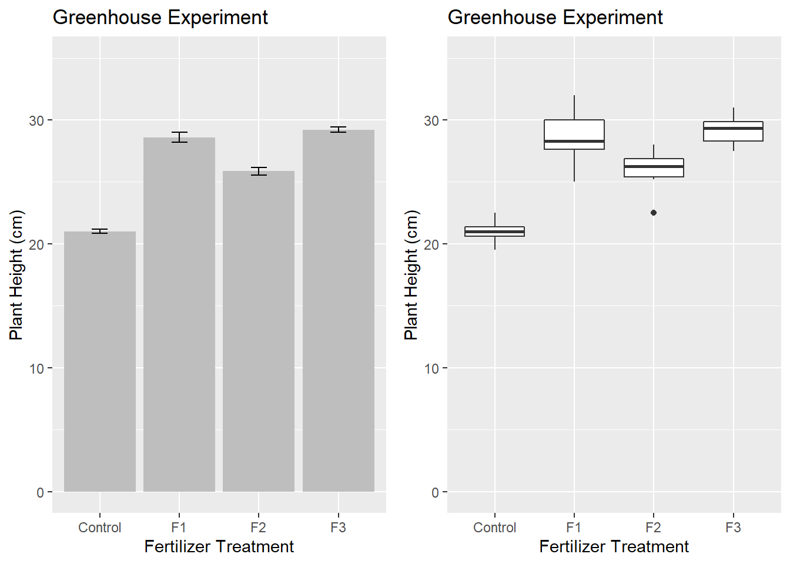

Chapter 11 Cluster Analysis
These note are primarily taken from the DataCamp courses Cluster Analysis in R and Unsupervised Learning in R, AIHR, and the UC Business Analytics R Programming Guide.
Unsupervised machine learning searches for structure in unlabeled data (data without a response variable). The goal of unsupervised learning is clustering into homogenous subgroups, and dimensionality reduction. Examples of cluster analysis are k-means clustering and hierarchical cluster analysis (HCA) (others here). Clustering is used for audience segmentation, creating personas, detecting anomalies, and pattern recognition in images.
I will learn by example, using the IBM HR Analytics Employee Attrition & Performance data set from Kaggle to discover what factors are associated with employee turnover and whether distinct clusters of employees are more susceptible to turnover. The clusters can help personalize employee experience (AIHR). This data set includes 1,470 employee records consisting of the EmployeeNumber, a flag for Attrition during some timeframe, and 32 other descriptive variables.
library(tidyverse)
library(correlationfunnel) # binary correlation analysis
library(cluster) # daisy and pam
library(Rtsne) # dimensionality reduction and visualization
library(plotly) # interactive graphing
library(dendextend) # color_branches
set.seed(1234) # reproducibility
dat <- read_csv("./input/WA_Fn-UseC_-HR-Employee-Attrition.csv")
dat <- dat %>%
mutate_if(is.character, as_factor) %>%
select(EmployeeNumber, Attrition, everything())
my_skim <- skimr::skim_with(numeric = skimr::sfl(p25 = NULL, p50 = NULL, p75 = NULL, hist = NULL))
my_skim(dat)| Name | dat |
| Number of rows | 1470 |
| Number of columns | 35 |
| _______________________ | |
| Column type frequency: | |
| factor | 9 |
| numeric | 26 |
| ________________________ | |
| Group variables | None |
Variable type: factor
| skim_variable | n_missing | complete_rate | ordered | n_unique | top_counts |
|---|---|---|---|---|---|
| Attrition | 0 | 1 | FALSE | 2 | No: 1233, Yes: 237 |
| BusinessTravel | 0 | 1 | FALSE | 3 | Tra: 1043, Tra: 277, Non: 150 |
| Department | 0 | 1 | FALSE | 3 | Res: 961, Sal: 446, Hum: 63 |
| EducationField | 0 | 1 | FALSE | 6 | Lif: 606, Med: 464, Mar: 159, Tec: 132 |
| Gender | 0 | 1 | FALSE | 2 | Mal: 882, Fem: 588 |
| JobRole | 0 | 1 | FALSE | 9 | Sal: 326, Res: 292, Lab: 259, Man: 145 |
| MaritalStatus | 0 | 1 | FALSE | 3 | Mar: 673, Sin: 470, Div: 327 |
| Over18 | 0 | 1 | FALSE | 1 | Y: 1470 |
| OverTime | 0 | 1 | FALSE | 2 | No: 1054, Yes: 416 |
Variable type: numeric
| skim_variable | n_missing | complete_rate | mean | sd | p0 | p100 |
|---|---|---|---|---|---|---|
| EmployeeNumber | 0 | 1 | 1024.87 | 602.02 | 1 | 2068 |
| Age | 0 | 1 | 36.92 | 9.14 | 18 | 60 |
| DailyRate | 0 | 1 | 802.49 | 403.51 | 102 | 1499 |
| DistanceFromHome | 0 | 1 | 9.19 | 8.11 | 1 | 29 |
| Education | 0 | 1 | 2.91 | 1.02 | 1 | 5 |
| EmployeeCount | 0 | 1 | 1.00 | 0.00 | 1 | 1 |
| EnvironmentSatisfaction | 0 | 1 | 2.72 | 1.09 | 1 | 4 |
| HourlyRate | 0 | 1 | 65.89 | 20.33 | 30 | 100 |
| JobInvolvement | 0 | 1 | 2.73 | 0.71 | 1 | 4 |
| JobLevel | 0 | 1 | 2.06 | 1.11 | 1 | 5 |
| JobSatisfaction | 0 | 1 | 2.73 | 1.10 | 1 | 4 |
| MonthlyIncome | 0 | 1 | 6502.93 | 4707.96 | 1009 | 19999 |
| MonthlyRate | 0 | 1 | 14313.10 | 7117.79 | 2094 | 26999 |
| NumCompaniesWorked | 0 | 1 | 2.69 | 2.50 | 0 | 9 |
| PercentSalaryHike | 0 | 1 | 15.21 | 3.66 | 11 | 25 |
| PerformanceRating | 0 | 1 | 3.15 | 0.36 | 3 | 4 |
| RelationshipSatisfaction | 0 | 1 | 2.71 | 1.08 | 1 | 4 |
| StandardHours | 0 | 1 | 80.00 | 0.00 | 80 | 80 |
| StockOptionLevel | 0 | 1 | 0.79 | 0.85 | 0 | 3 |
| TotalWorkingYears | 0 | 1 | 11.28 | 7.78 | 0 | 40 |
| TrainingTimesLastYear | 0 | 1 | 2.80 | 1.29 | 0 | 6 |
| WorkLifeBalance | 0 | 1 | 2.76 | 0.71 | 1 | 4 |
| YearsAtCompany | 0 | 1 | 7.01 | 6.13 | 0 | 40 |
| YearsInCurrentRole | 0 | 1 | 4.23 | 3.62 | 0 | 18 |
| YearsSinceLastPromotion | 0 | 1 | 2.19 | 3.22 | 0 | 15 |
| YearsWithCurrManager | 0 | 1 | 4.12 | 3.57 | 0 | 17 |
You would normally start a cluster analysis with an exploration of the data to determine which variables are interesting and relevant to your goal. I’ll bypass that rigor with a simple correlation funnel GitHub README using binary correlation and include just the variables with a correlation coefficient of at least 0.10.
Binary correlation analysis converts features into binary format by binning the continuous features and one-hot encoding the binary features. correlate() calculates the correlation coefficient for each binary feature to the response variable. A Correlation Funnel is an tornado plot that lists the highest correlation features (based on absolute magnitude) at the top of the and the lowest correlation features at the bottom. For our data set, OverTime (Y|N) has the largest correlation, JobLevel = 1, MonthlyIncome <= 2,695.80, etc.
dat %>%
select(-EmployeeNumber) %>%
binarize(n_bins = 5, thresh_infreq = 0.01) %>%
correlate(Attrition__Yes) %>%
plot_correlation_funnel(interactive = FALSE) #%>%
Using the cutoff of 0.1, we get 14 features to use in the analysis.
vars <- c(
"EmployeeNumber", "Attrition",
"OverTime", "JobLevel", "MonthlyIncome", "YearsAtCompany", "StockOptionLevel",
"YearsWithCurrManager", "TotalWorkingYears", "MaritalStatus", "Age",
"YearsInCurrentRole", "JobRole", "EnvironmentSatisfaction", "JobInvolvement",
"BusinessTravel"
)
dat_2 <- dat %>%
select(one_of(vars))Central to clustering is the concept of distance. Two observations are similar if the distance between their features is relatively small. There are many ways to define distance (see options in ?dist), but the two most common are Euclidean, \(d = \sqrt{\sum{(x_i - y_i)^2}}\), and binary, 1 minus the proportion of shared features (Wikipedia). If a data set contains both numerica and categorical data, there is a third distance measure, the Gower Distance.
When calculating a Euclidean distance, the features should be on similar scales. Standardize their values as \((x - \bar{x})) / sd(x)\) so that each feature has a mean of 0 and standard deviation of 1. Check if scaling is necessary with colmeans() function and apply(df, 2, sd). The scale() function is a generic function that scales the columns of a matrix. When calculating a binary distance, the categorical features should be binary. Create dummy variables with dummies::dummy.data.frame(). The clustering algorithm may calculate the distances, but standardizing is up to you.
R function dist() calculates distances between observations. daisy() is an alternative that calculates the Gower distance after standardizing.
As a sanity check, we can check the most similar and dissimilar pair of employees according to their Gower Distance score. Here are the most similar employees.
gower_mat <- as.matrix(gower_dist)
dat_2[which(gower_mat == min(gower_mat[gower_mat != 0]), arr.ind = TRUE)[1, ], ]## # A tibble: 2 x 16
## EmployeeNumber Attrition OverTime JobLevel MonthlyIncome YearsAtCompany
## <dbl> <fct> <fct> <dbl> <dbl> <dbl>
## 1 1624 Yes Yes 1 1569 0
## 2 614 Yes Yes 1 1878 0
## # ... with 10 more variables: StockOptionLevel <dbl>,
## # YearsWithCurrManager <dbl>, TotalWorkingYears <dbl>, MaritalStatus <fct>,
## # Age <dbl>, YearsInCurrentRole <dbl>, JobRole <fct>,
## # EnvironmentSatisfaction <dbl>, JobInvolvement <dbl>, BusinessTravel <fct>And here are the most dissimilar employees.
## # A tibble: 2 x 16
## EmployeeNumber Attrition OverTime JobLevel MonthlyIncome YearsAtCompany
## <dbl> <fct> <fct> <dbl> <dbl> <dbl>
## 1 1094 No No 1 4621 3
## 2 825 Yes Yes 5 19246 31
## # ... with 10 more variables: StockOptionLevel <dbl>,
## # YearsWithCurrManager <dbl>, TotalWorkingYears <dbl>, MaritalStatus <fct>,
## # Age <dbl>, YearsInCurrentRole <dbl>, JobRole <fct>,
## # EnvironmentSatisfaction <dbl>, JobInvolvement <dbl>, BusinessTravel <fct>